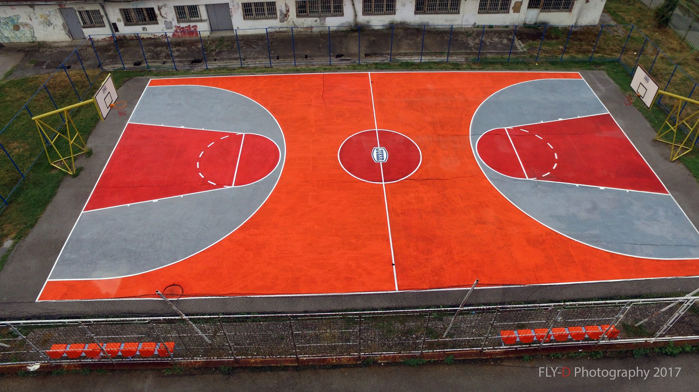
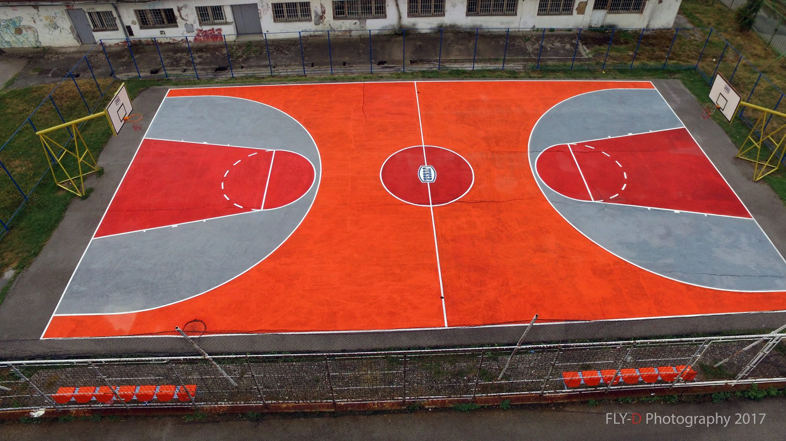
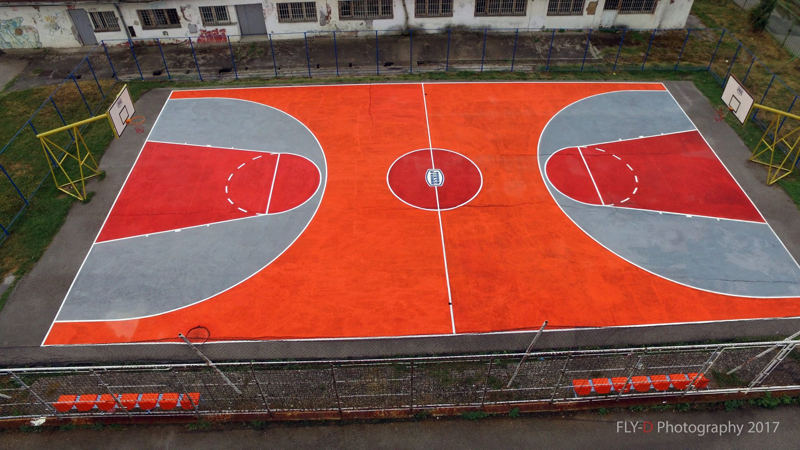

Кошаркашки терен је заправо правоугаоник дужине 28м ширине 15м. Дуже стране игралишта зову се бочне линије, а краће чеоне.
У кругу на центру се скаче за освајање лопте и тако започиње кошаркашка утакмица. Он је полупречника 180цм.
Линија слободног бацања угаљена је 5,8м од чеоне линије
Линија 3 поена удаљена је 6,75м од места на поду које је испод средишта коша

Табла је димензија 1.8м х 1.05м
Унутрашњи пречник обруча кроз који пролази лопта је 45цм
Висина обруча у односу на под је 3.05м
Мушкарци играју лоптом величине 7, тежине 567 до 650 грама, обима 74.9до 78цм.
Жене играју лоптом величине 6, тежине 510 до 567 грама, обима 72.4 до 73.7 цм

Екипу чини 12 играча од који је 5 на терену
Играчи једне екипе носе исту опрему, дресове, шортсеве
Један играч у екипи је капитен и он има право да комуницира са судијама

Утакмица се састоји од 4 периода (четвртине) од по 10мин
Између четвртина је пауза два минута, а полувреме је 15 мин
Ако је резултат нерешен продужетак је 5мин
Свака екипа има право на два тајм аута од по 1мин у првом полувремену и на три тајм аута у другом полувремену
Напад траје 24 секунде
Екипа мора у року од 8 секунди да пренесе лопту у поље противника
Играч не сме да буде дуже од 3 секунде у рекету противника
Играч може да начини највише пет личних грешака. Када начини пети фаул мора да напусти игру